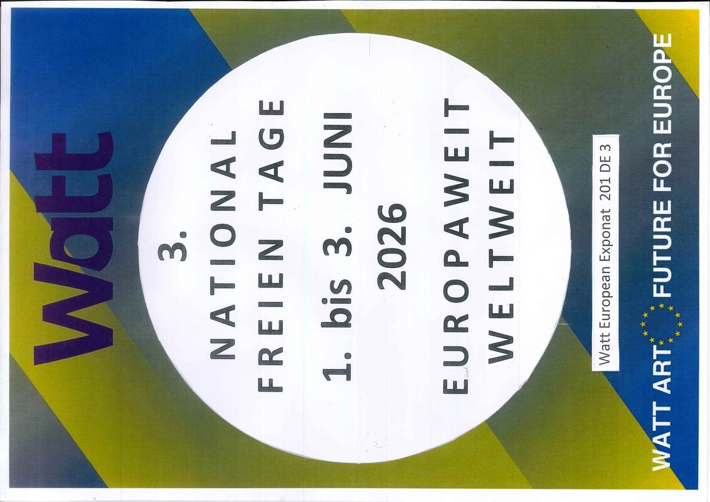
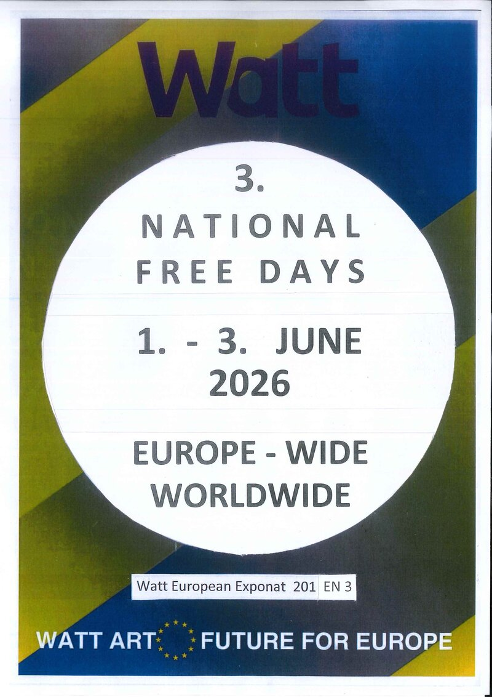
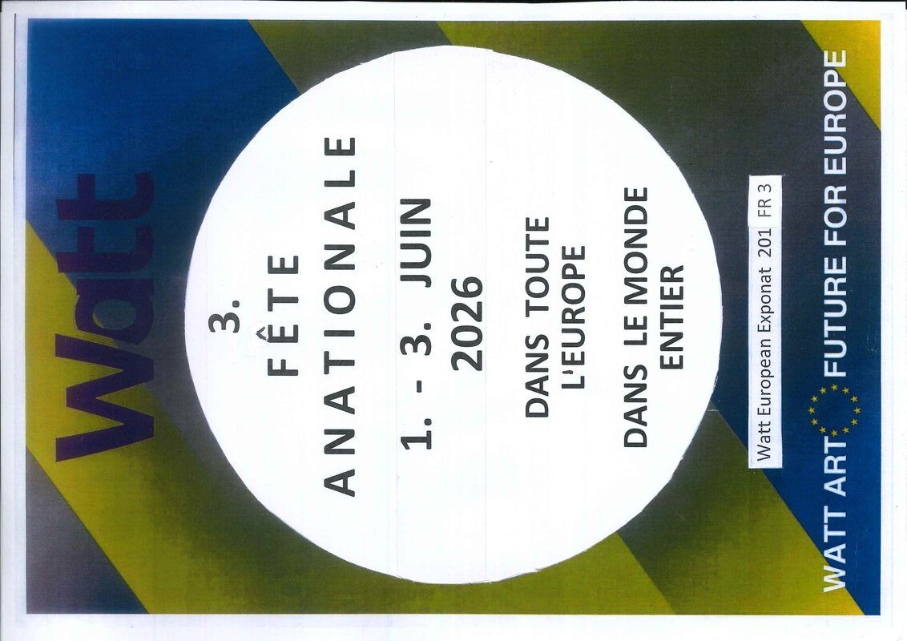
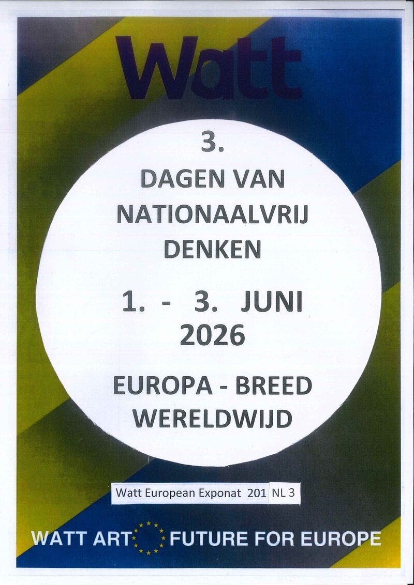
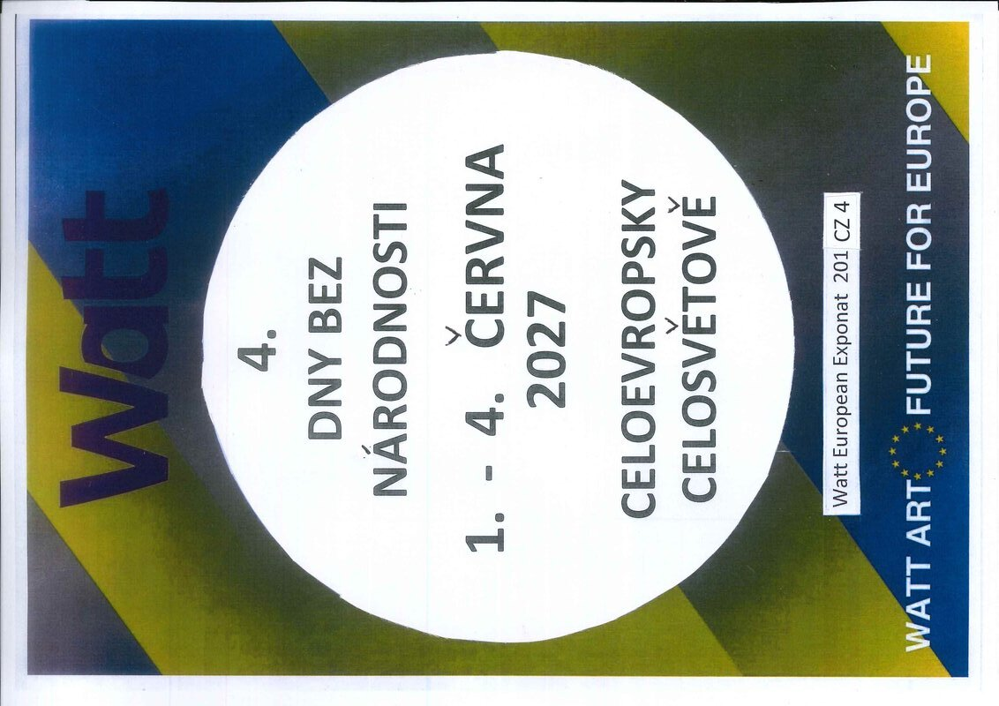
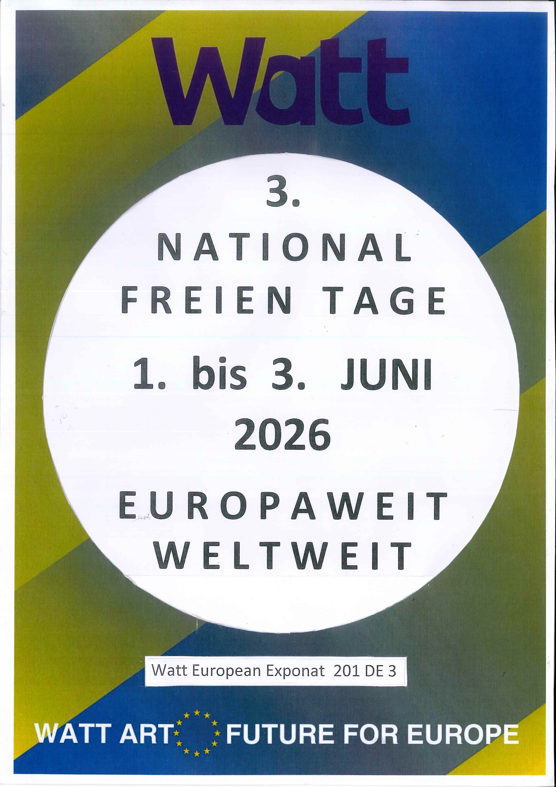

🇩🇪 Deutsch (DE)
201 DE 3
3. National Freien Tage
1. bis 3. Juni 2026
Europaweit & Weltweit. Befreiung der Menschen aus ihrer eigenen engen nationalen Blase.
Raus aus den nationalen Heiligkeitsblasen – hinein in eine grenzenlose europäische und weltweite Gemeinschaft. Ein Gegenpol zu nationalem Egoismus und Ausgrenzung.
«Runter mit den nationalen Eitelkeiten und Respekt, Respekt, Respekt vor dir!»

Entdecken Sie die kreisrunden Exponat-Inlets in Deutsch, Englisch, Französisch, Niederländisch und Tschechisch. Zum Ansehen, Teilen und als druckfertige PDF-Vorlagen.
1. bis 3. Juni 2026
Europaweit & Weltweit. Befreiung der Menschen aus ihrer eigenen engen nationalen Blase.

1 - 3 June 2026
Europe-Wide & Worldwide. Fostering shared democratic institutions and global solidarity.

1 - 3 Juin 2026
Dans toute l’Europe & dans le monde entier. Dépasser les vanités nationales pour l'unité.

1 - 3 Juni 2026
Europa-Breed & Wereldwijd. Loskomen van de natiestaat voor een hechte Europese gemeenschap.

1. - 4. Června 2027 (Praha)
Celoevropsky & Celosvětově. Výhled na velkou akci v Praze pro evropskou pospolitost.
Verfolgen Sie die Abschlusskundgebung in Wegberg, die Ansprachen von Josef Tieber und die Vorführung des kinetischen Kunstwerks „Hohe Europäische Rösser“.
Wie aus der europäischen Finanzkrise 2014 eine künstlerische Bewegung für mehr Gemeinschaftlichkeit und gegen nationalistische Abschottung entstand.
Die Idee zum Kunstwerk entstand 2014. Josef Tieber beobachtete, wie sich europäische Nationalstaaten zunehmend von der gemeinsamen Idee abwandten und auf „hohe Rösser“ stiegen.
Statt die Geschichte rückwärts zu drehen, soll Europa kraftvoll angeschoben werden – hin zu gemeinsamen Institutionen und echter europäischer Souveränität.
„Wenn man die Liste der Nationalfeiertage durchsieht, gibt es unzählige Feiertage für Unabhängigkeit und heroische Nation. Diese Denkstrukturen aus dem 19. Jahrhundert sind heute überlebt.“
Die Nationalfreien Tage schaffen einen bewussten Raum im Kalender, um sich von nationaler Denke und Heiligkeitsblasen frei zu machen, ohne sich gegenseitig zu dämonisieren.
„Jeder einzelne Mensch ist ungeheuer wertvoll und in seiner Würde unantastbar. Wir stehen zum Frieden – für alle Menschen weltweit.“
Von der Französischen Revolution über liberale und ökologische Bewegungen (GRÜN) bis hin zu VIOLETT als zeitgemäße, übernationale europäische Leitkultur des 21. Jahrhunderts.
Ein einziger, verlässlicher EU-Außengrenzschutz kombiniert mit nahtloser Koordination: vom gesamteuropäischen Bahn-Ticketing bis zum gemeinsamen Schutz universeller Grundrechte.
Das Projekt lebt vom Mitmachen. Werden Sie Teil der Bewegung und setzen Sie ein sichtbares Zeichen für mehr Zusammenhalt.
Laden Sie die 5 Sprach-Inlets als hochwertige PDF-Druckvorlagen herunter und hängen Sie sie in Ihrem Schaufenster, Büro oder Verein auf.
Zu den Downloads„Runter mit den nationalen Eitelkeiten und Respekt vor dir!“ Verwenden Sie den Gruß als Zeichen der Offenheit und Verbundenheit.
Mehr zum GrußVeranstalten Sie eigene Diskussionsabende, Kunstaktionen oder Treffen zur Überwindung nationaler Vorurteile in Ihrer Stadt.
Kontakt aufnehmenMerken Sie sich die 4. Ausgabe vor: 1. bis 4. Juni 2027 in Prag (4 Dny Bez Národnosti) – ein großes internationales Gemeinschaftsevent.
Ausblick 2027
Watt European Exponat 201 DE 3
Ausbruch aus nationalen Heiligkeitsblasen für mehr europäische und weltweite Gemeinschaftlichkeit.